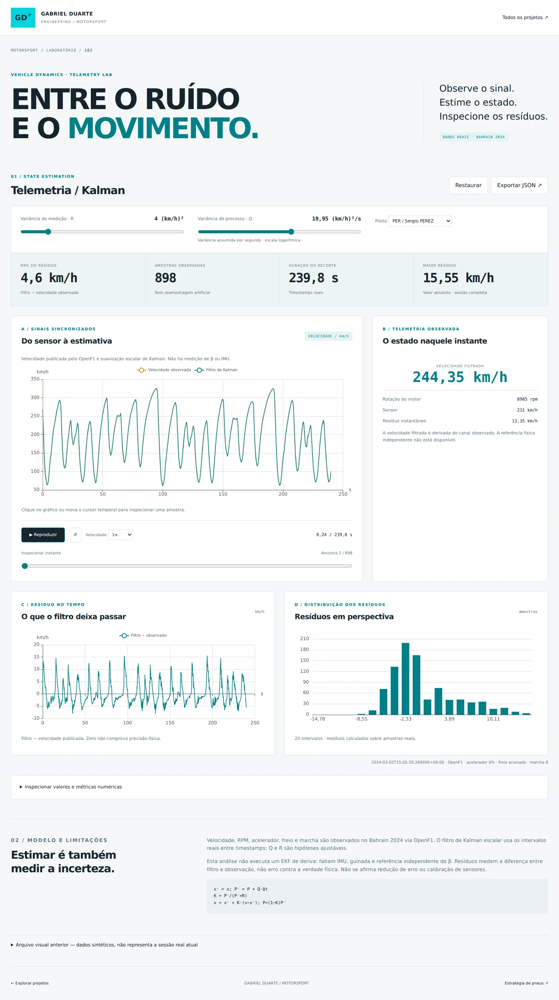

VEHICLE DYNAMICS · TELEMETRY LAB
ENTRE O RUÍDO
E O MOVIMENTO.
Observe o sinal.
Estime o estado.
Inspecione os resíduos.
01 / STATE ESTIMATION
Telemetria / Kalman
A / SINAIS SINCRONIZADOS
Do sensor à estimativa
Velocidade publicada pelo OpenF1 e suavização escalar de Kalman. Não há medição de β ou IMU.
Clique no gráfico ou mova o cursor temporal para inspecionar uma amostra.
C / RESÍDUO NO TEMPO
O que o filtro deixa passar
Filtro − velocidade publicada. Zero não comprova precisão física.
D / DISTRIBUIÇÃO DOS RESÍDUOS
Resíduos em perspectiva
20 intervalos · resíduos calculados sobre amostras reais.
Preparando visualizações…
Inspecionar valores e métricas numéricas
| Tempo (s) | RPM | Observado (km/h) | Filtrado (km/h) | Resíduo (km/h) |
|---|
02 / MODELO E LIMITAÇÕES
Estimar é também
medir a incerteza.
Velocidade, RPM, acelerador, freio e marcha são observados no Bahrain 2024 via OpenF1. O filtro de Kalman escalar usa os intervalos reais entre timestamps; Q e R são hipóteses ajustáveis.
Esta análise não executa um EKF de deriva: faltam IMU, guinada e referência independente de β. Resíduos medem a diferença entre filtro e observação, não erro contra a verdade física. Não se afirma redução de erro ou calibração de sensores.
x⁻ = x; P⁻ = P + Q·Δt K = P⁻/(P⁻+R) x = x⁻ + K·(v−x⁻); P=(1−K)P⁻
Captura da análise com dados históricos reais
